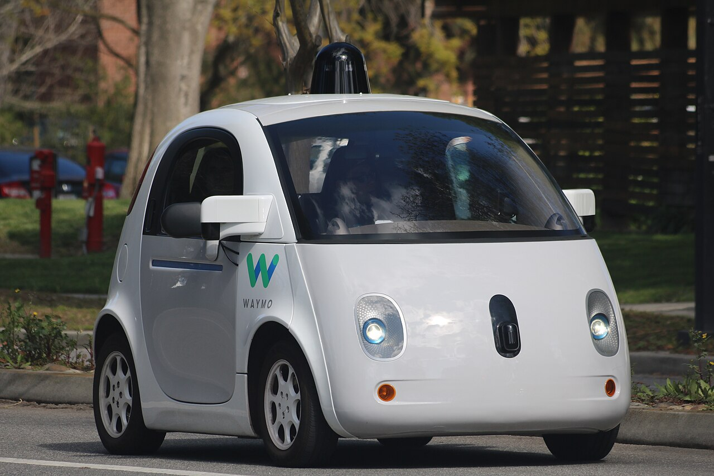

Narrow AI and General AI
What Today's AI Can and Cannot Do
Show a modern image recognition system a photo of a panda, and it will say "panda". In 2014 three researchers, Ian Goodfellow, Jonathon Shlens and Christian Szegedy, took such a photo and added a layer of carefully calculated noise, so small that to a human the picture looked exactly the same. The AI changed its mind: it was now 99.3% sure that the photo showed a gibbon, a kind of monkey. They called these images adversarial examples. A system that recognizes thousands of objects can be fooled by a change that no person would even notice. This is a good place to start talking about what AI can and cannot do.
Narrow AI

Every AI system that exists today is narrow AI, also called weak AI. It is designed for one specific task, or a limited set of tasks: recognizing faces, recommending videos, translating, playing Go, answering questions. IBM calls it "the only type of AI that exists today".
"Weak" does not mean bad. A narrow AI can be much better than any human at its job: in 2016 AlphaGo beat Lee Sedol, one of the best Go players in the world, as told in the History of AI section. But being excellent in one area does not give a system abilities in others. AlphaGo could not translate a sentence, and a translation app cannot play Go.
General AI
Artificial general intelligence, or AGI, also called strong AI, is something different: a machine able to understand, learn and apply knowledge across a broad range of tasks, at a level comparable to a human. It could use what it learned in one area to solve problems in a completely new one, as people do. IBM describes this level of AI as "currently theoretical" and adds that "no known AI systems approach this level of sophistication". Beyond it there is an even more hypothetical idea, super AI, a machine more intelligent than humans in every way.
Today's chatbots can write, translate, summarize and write code, so they can seem general. But producing fluent language, or doing several tasks, is not by itself proof of general intelligence. When AGI might arrive, and if it ever will, is one of the most debated questions in technology: the article "General AI: Hype vs Reality" on this website looks at both sides.
Four Types of AI
Another way to classify AI, popular in textbooks and used by IBM, looks at how a system works and what it remembers.
- Reactive machines have no memory and react only to what is in front of them. IBM's chess computer Deep Blue, which beat Garry Kasparov in 1997, is the classic example: it analyzed the board, but it did not learn from past games.
- Limited memory systems can use recent information and what they learned from data. Most of today's AI belongs here, from self-driving cars, which follow the other cars on the road, to chatbots like ChatGPT.
- Theory of mind AI would understand the thoughts and emotions of other beings. It does not exist yet.
- Self-aware AI would understand its own internal state and have its own feelings and beliefs. It is purely theoretical.

The first two types exist. The last two are still science fiction, and the previous article "Can a Machine Think?" shows why it is so hard even to know how we would recognize them.
What AI Is Good At
AI can process huge amounts of information very fast, find patterns that people would miss, and support human decisions. It filters billions of emails, checks card payments in a fraction of a second and helps doctors and scientists with their work. The article "The Invisible Assistant" on this website shows how much of it we use every day without noticing.
Where It Fails
The panda shows that AI can be fragile. Here are three more limits to remember:
- It can be confidently wrong. A clear and convincing answer is not necessarily a correct one. Chatbots sometimes invent facts, names or sources. (The article "Using AI Well" shows real cases.)
- It can be unfair. An AI learns from data, and if the data is biased, the results can be too. (The article "Data and Training" shows how.)
- It does not understand like we do. It works with patterns, not with experience of the world, so it can fail in situations that are different from its training data.
Capabilities and Boundaries
Understanding AI means knowing both what it can do and where it stops. AI is not a single thinking machine, but a broad collection of technologies for performing tasks associated with intelligence. How useful they are depends on the task, on the information they learned from, and on how carefully people check their results. That last part is still our job.
Sources
Image credits
- Giant panda eating bamboo Taipei Zoo by KQuhen, CC BY-SA 4.0, via Wikimedia Commons
- Waymo self-driving car front view by Grendelkhan, CC BY-SA 4.0, via Wikimedia Commons